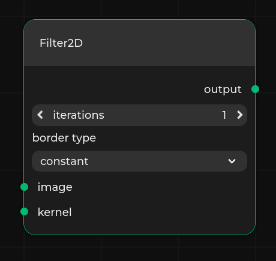

Specification format¶
Pipeline Manager requires a JSON specification that defines the working environment. It specifies all nodes, properties, available connections, and metadata for the editor. It can be either provided from a file or fetched from an external application.
Such a specification defining the nodes needs to be loaded through the front end in order for you to be able to load any dataflow.
Format description¶
The specification needs to be provided in a JSON file. The specification consists of:
metadata- object of type Metadata that specifies editor styling and metadatanodes- array that specifies valid nodes, where every element is of type Node.graphs- array of dataflow-like objects defining graph nodes, of type Graph.include- array of string objects pointing to a remote url to the specifications to include.includeGraphs- array of objects of type Included Graph, that specifies graph instances to be included in the specification from a remote url.entryGraph- ID of the graph that should be loaded with the specification. A graph can be chosen fromincludeorincludeGraphs.version- string determining version of the specification. Should be set to the newest version described in Changelogs. Pipeline Manager uses that value to check the compatibility of the specification with the current implementation, giving warnings about inconsistency in versions.
Note
Graph node named New Graph Node is available by default after loading a specification.
It can be used to create new, custom graphs.
That is why using this name for a graph will result in an error.
Metadata¶
This object specifies additional editor options and contains the following optional properties:
interfaces- a dictionary which defines interface and connection styling for particular interface types. The key in the dictionary is the name of the interface type, and the value is of type Interface style.allowLoopbacks- boolean value that determines whether connections with endpoints at the same node are allowed. Default value isfalse.readonly- boolean value determining whether the editor is in read-only mode. In read-only mode, the user cannot create or remove nodes and connections. Modification of any properties is also disabled. The user is only allowed to load existing dataflows. Default value isfalse.twoColumn- boolean value determining the layout of the nodes. If set totrue, then input and output sockets are both rendered in the top part of the node and properties are displayed below. Default value isfalse.connectionStyle- string value that determines the connection style. Can choose one out of the two options:curvedororthogonal. Default value iscurvedhideHud- boolean value determining whether UI elements should be hidden. Components affected by this flag are: popup notifications, navigation bar and terminal window. Default value isfalselayers- layers specifying groups of interfaces and nodes that can be hidden in the viewer from settings level. The entries are of type Layer. By default there are no layers.urls- list of URL classes present in the specification and flow. It is a dictionary, where key is the name of the URL class, and value is of type URL class specification. The given URL classes can be referred to later in Nodes with proper link suffix.collapseSidebar- boolean value determining whether nodes sidebar should be collapsed by default. Default value istruemovementStep- Defines offset to which nodes snap in the grid. Default value is1.backgroundSize- Defines size of the background grid. Default value is100.layout- String specifying the name of autolayout algorithm used in placing nodes from dataflow Default value isNoLayouticons- contains definition of icon classes. Icon classes are key-value pairs, where key is the name of the icon class, and value is the URL prefix that is used to compute the actual path.styles- a dictionary that defines node styles. The key in the dictionary is the name of the style, and the value is of type Node style.welcome- boolean value determining whether a welcome text should appear on empty editor. This feature is enabled by default.navbarItems- list of buttons that are displayed in the navbar inserver-appmode, that allow for calling custom procedures. The entries are of type Navbar item.logLevel- string specifying minimum level of verbosity notification has to have to be displayed. It can be one ofINFO,WARNING,ERROR.editableTypes- Boolean specifying whether nodes can be edited. It may be changed later in the UI (given thattoggleableEditableTypesis enabled in the specification). The default value isfalse.toggleableEditableTypes- Boolean value determining whether node editibility can be toggled from the frontend. The default value istrue.newGraphNode- Boolean value telling whether anonymous graphs should be available for the given specification or not.notifyWhenChanged- Boolean value specifying whether the frontend should send requests with information about changed values. This option is only effective when Pipeline Manager is run in server-app mode. Notifications include events from the list of available events ending with_on_change.hideAnchors- Boolean value determining whether anchors in all connections should be hidden and only visible on hover. The default value isfalse.showIds- Boolean value determining whether node IDs and graph IDs should be visible in the editor. The default value isfalse.showHiddenProperties- Boolean value determining whether properties marked withhideOnDefaultshould be visible regardless of their value. The default value isfalse.
An example:
"metadata": {
"interfaces": {
"Dataset": {
"interfaceColor": "#FF00FF",
"interfaceConnectionPattern": "dashed",
"interfaceConnectionColor": "#FF0000"
}
},
"allowLoopbacks": false,
"readonly": true,
"connectionStyle": "orthogonal",
"hideHud": false,
"layers": [
{
"name": "Example Layer",
"nodeLayers": ["processing"],
"nodeInterfaces": ["BinaryImage"]
}
],
"layout": "NoLayout"
}
Layer¶
Layer is used to describe a set of types of nodes and interfaces. Layers can be used to hide nodes of given types. They can be also used to hide connections for given interface types.
The layers can be enabled or disabled in editor settings.
Every layer has three properties (at least name and one of nodeLayers or nodeInterfaces need to be defined):
name- name of the layer displayed in the editor,nodeLayers(optional) - array of names of node types that belong to the layer,nodeInterfaces(optional) - array of names of interface types that belong to the layer.
URL class¶
URL class provides links with additional information for a given node. They are represented in nodes as icons leading to a URL with additional information on nodes.
The name of the URL class is specified as key in urls entry in metadata.
The URL class parameters are following:
name- name of the URL class, appears as hint on hover over the icon,icon- path to the icon representing the URL class,url- base URL for URL class. The suffixes for URLs are present in Node parameters.
Interface style¶
Interface style describes how interfaces of a given type should look like, as well as its input or output connections. It consists of the following properties:
interfaceColor- describes the color of the interface, should be a hexadecimal number representing RGB values.interfaceConnectionPattern- describes how the connection line should look like. The possible variants aresolid,dashedanddotted.interfaceConnectionColor- describes the color of connection lines, should be a hexadecimal number representing RGB values.
Node style¶
Node style defines how nodes of a given style should look like. Currently, the following elements are supported:
color- color of the node unless a node sets its owncolor,icon- secondary icon of the node, which is displayed separately from Nodeicon,pill- pill of the node unless a node sets its ownpill.
Field values are defined the same way as in Node specification, however, icon can obtain Navbar item iconName values as well.
There exist special styles:
__new- managed automatically and does not persist specification saves and loads,__edited- added to the node type which was modified.
Specificity¶
Node type can define multiple styles and styling of type-specific elements (e.g. icon).
Moreover, an instance can do this as well, although it is currently limited to the color option.
The following order of specificity is used when evaluating the actual style of a given element (the first - the most important):
Node instance styling
Node type styling
Styles defined by the node type
Cascading¶
Appearance of a given element is determined by the the most specific rule that defines the element.
Note
Value null is a regular style value (i.e. undergoes the same merging procedure). It discards any lower-precedence styling of an element.
Example¶
For example, given:
styles:
{
"style1": {
"options": {
"color": "#0000FF",,
"icon": "Cogwheel",
"pill": {
"text": "options"
}
},
"miscellaneous": {
"color": null,
"pill": {
"text": "misc"
}
}
}
}
a node type:
{
"name": "Node",
"style": ["options", "miscellaneous"],
"pill": null
}
a node instance:
{
"id": "401aff7b-fbb7-44cb-8f77-c78c80deefff",
"position": {
"x": 0,
"y": 0
},
"width": 300,
"twoColumn": false,
"interfaces": [],
"properties": [],
"enabledInterfaceGroups": [],
"name": "Node",
"instanceName": "Node",
"color": "#000000"
},
would resolve in the following way:
Element |
Style |
Style |
Node type |
Node instance |
Resolved value |
|---|---|---|---|---|---|
|
|
|
|
|
|
|
|
|
|
– |
|
|
|
|
|
– |
|
Navbar item¶
Describes a list of custom buttons displayed in the navbar. Every element consists of the following properties:
name- displayed as a tooltip to the user when the button is hovered. Names have to be unique.stopName- name displayed in the tooltip when the corresponding procedure is running and is stoppable. If not specified simply ‘Stop’ is added as a prefix to the name.iconName- name of the icon that is used. It can be either a file in the assets directory, or an icon described in/pipeline-manager/pipeline_manager/frontend/src/icons/index.ts.procedureName- name of the procedure (either a built-in API procedure or a custom procedure) to be called. It is assumed that the procedure accepts a does not need any arguments, or takes one argument which is the currently displayed dataflow (similarly to [dataflow_run(#external-dataflow-run)]).allowToRunInParallelWith- a list of procedure names that can be started in parallel to the currently running job.
Example of a button that is used to run the current graph using a dedicated procedure dataflow_run looks as follows:
{
"name": "Run",
"stopName": "Stop",
"iconName": "Run",
"procedureName": "dataflow_run",
"allowToRunInParallelWith": [
"dataflow_validate",
"custom_lint_files"
]
}
This will create a button called Run, with the Run icon (available built-in icon), which upon clicking will run dataflow_run method.
During execution of the dataflow_run method, we can run in parallel dataflow_validate and custom_lint_files procedures.
Note
By default, only single action can be called from NavBar at a time.
Warning
allowToRunInParallelWith is a one-way relation.
This means that if we have two actions that can be started when the other one is running, then allowToRunInParallelWith needs to be defined in both actions.
Node¶
This object specifies a single node.
name- name displayed in the editor.layer- layer type used for styling and toggling the node visibility in the editor.category- context menu category displayed in the editor.icon- name of an SVG icon that is going to be displayed next to the name of the node. The value oficoncan be:stringcontaining the path to the icon relative to theassetsdirectory, e.g.filter.svgforpipeline_manager/frontend/dist/assets/filter.svgstringcontaining the URL to the remote image file{"key": "value"}pair, wherekeyis the name of the icon class created inicons, in Metadata, andvalueis a suffix of the URL.
Note
The
assetsdirectory can be created and filled manually or added bybuildscript with--assets-directory <path-to-directory-with-icons>, e.g.:./build --assets-directory examples/sample-assets static-html static-html examples/sample-specification.jsonstyle- node style name described instylesin Metadata. The value ofstylecan be:string- single style,array- multiple styles, each subsequent style overrides the previous one.
interfaces- array representing inputs, outputs and bidirectional ports for nodes. The entries are of type Interface.properties- array with elements of type Property,interfaceGroups- array with elements of type Interface Groups,defaultInterfaceGroups- array of objects that specifies which interface groups are enabled by default. Every object should contain anameanddirectionof an Interface Groups.urls- a dictionary of URL class and URL suffixes pairs. The key should be a URL class key fromurlsinmetadata. The value of the entry is appended to the URL base from the URL class.abstract- boolean determining whether the node type is abstract or not. Abstract node types are used only for inheritance purposes, they do not appear in the final list of available nodes. They only have one mandatory field -name. The rest of the fields can be provided to introduce some common properties of classes inheriting from it.additionalData- can be any JSON-like object (array, dictionary, number, string, …), it is only used for storing some additional, node-specific data, such as comments etc.description- description of the node in markdown format that is displayed in a sidebar node.isCategory- determines whether the node is both a category and a node. If set to true, then thenameof the node is inferred from the last text segment in thecategoryparameter. If any node has a node category in itscategorypath then it has to extend from the nearest ancestor category node. Additionally, if a node extends from a category node, then it has to be in its subtree.color- a hexadecimal color that will be used as the node background in the editor. If not provided, the default Kenning Pipeline Manager color scheme will be used.width- a default width, in pixels, of a node in the editor.twoColumn- boolean value. If set totrue, the interfaces on opposite sides will be arranged parallel to each other. Otherwise, each interface will be positioned on a separate line.pill- a dictionary that defines an additional node tag displayed in the top right corner of the node. It has the following entries:text- content of the pill,color(optional) - background color. The default color is white.
Some or all of the properties above (except for name) can be derived from existing node types using the extends list - check Node type inheritance.
Here is an example of a node:
{
"name": "Filter2D",
"layer": "filters",
"category": "Filters",
"icon": "filter.svg",
"description": "Node that applies a *2D* filter.",
"properties": [
{
"name": "iterations",
"type": "integer",
"default": 1
},
{
"name": "border type",
"type": "select",
"values": ["constant", "replicate", "wrap", "reflect"],
"default": "constant"
}
],
"interfaces": [
{
"name": "image",
"type": "Image",
"direction": "input"
},
{
"name": "kernel",
"type": "Image",
"direction": "input"
},
{
"name": "output",
"type": "Image",
"direction": "output"
}
],
"color": "#4e096f"
}
Interface¶
An object that specifies a single input, output or inout interface of node. Every interface object has following properties:
name- name of the input displayed in the editortype- type of the input used for styling and validation purposes. Can be either a list of strings or a single string. If two interfaces have at least one matching type, they can be connected. The first type in the list is a “base” type - it is used to color the interface based on Interface style. If only one type between two interfaces is matching, the connection style matches the one defined for this particular type. Otherwise, if multiple types are matching, a white solid line for connection is rendered.direction(optional) - type of the interface in terms of direction, it can be:input- interface accepts input data,output- interface returns output data.inout- interface can both produce outputs and receive inputs.
The default value is
inout.maxConnectionsCount(optional) - specifies the maximum allowed number of connections for a given port. Value less than 0 means no limit for connections for a given interface. Value equal to 0 means default behavior - one allowed connection to inputs, many allowed connections from outputs. The default value is 0.side(optional) - specifies the side on which the interface is rendered. Value can be eitherleftorright. Interfaces withdirectionset toinputorinoutare by default rendered on the left side of the node. Interfaces withdirectionset tooutputare by default rendered on the right side of the node.dynamic(optional) - determines whether the interface should be dynamic, which means that the number of interfaces created of this definition can be changed in the editor. For each dynamic interface definition, a new property is added to the node that allows the user to change the number of interfaces. The name of the property is determined by thenameanddirectionof the dynamic interface. The format is{name} {direction} count, so it is important not to create conflicting properties. The name of the dynamic interfaces is{name}[{i}], whereiis the index of the interface.dynamicproperty can be eithertrue, then the maximum number of interfaces is not limited, or an array in a form of[min, max]that specifies the range of interfaces. All created interfaces share the samemaxConnectionCountandtypevalues.array(optional) - special keyword to easily define a range of interfaces. Value has to be a list with two integer values that specify the range of interfaces. For example, for anexampleinterface witharray: [0, 2]two interfaces calledexample[0]andexample[1]are created.sidePosition(optional) - specifies the row on which the interface is rendered. Values for interfaces of the samesidevalue have to be unique. If the value is not provided then rows are automatically provided by iterating from the first upper row. This value does not work forarraykeyword, as it produces more than one interface.externalName(optional) - used for graph nodes only, to expose an interface of a node within the graph. It specifies the name of the interface of the graph. Both the interface of the graph node and the interface of the node within the graph must have the sameidanddirectionfields. Note that values ofexternalNameof the graph node have to be unique.
Note
Only interfaces of the same type can be connected together.
Property¶
An object that specifies a single property. Every project object has three required base properties:
name- name of the property.type- type of the property.default- specifies a default selected value Its type depends on thetypechosen.
There are 13 possible values for the type property.
text- property is a string. A text field is displayed to the user.multiline- property is a multi-line string. It allows to format the text in Markdown format.constant- property is a string. A non-modifiable text field is displayed to the user.number- property is a float. A number field is displayed to the user.integer- property is an int. A number field that only accepts integers is displayed to the user.select- property is a string with a defined range. It requires avaluesproperty.bool- property is a bool. A bool representing boolean valueslider- property is a float with a specified range. It requiresminandmaxproperties.list- property is a list of arguments of the same type, which can be specified usingdtype.hex- property is a string representing base-16 number which has to match the following regex:/0x[a-fA-F0-9].button-url- property is a button which opens a new tab with a given URL.button-api- property is a button which triggersbutton_clickExternal App API request, providing propertyidandvalue.button-graph- property is a button which opens a subgraph with a given URL.
Additional properties:
min- specifies the left end of a range or minimal value of the base-16 number.max- specifies the right end of a range or maximal value of the base-16 number.values- specifies a range of possible values forselect.dtype- specifies data type of elements in alist. Supported values arestring,number,integer,boolean.description- description of the property. In some cases, it can be displayed to the user.group- object of type Group.override- boolean value determining whether the property should be overridden.readonly- boolean value determining whether the property should be read-only.hideOnDefault- boolean value determining whether the property should be kept hidden if it has default or no value assigned.
Group¶
Array with elements of type Property.
It defines properties that are toggled by the property.
group can only be used with property of type bool.
Example group of properties:
{
"name": "Group", "type": "bool", "default": true, "group": [
{"name": "prop-a", "type": "integer", "default": 1},
{"name": "prop-b", "type": "text", "default": ""}
]
}
Node type inheritance¶
It is possible to inherit:
layercategoryiconinterfacespropertiesurls
From existing node types using the extends parameter.
The parameter accepts a list of node types.
The node type is computed by iteratively updating node type definition structures, going through all node types in the extends list (in the specified order), and then applying parameters from the current node type.
Below is a sample specification with used inheritance mechanism:
{
"nodes": [
{
"name": "Type A",
"layer": "class",
"category": "Classes",
"properties": [
{"name": "prop-a", "type": "text", "default": ""}
],
"interfaces": [
{"name": "output-a", "type": "Interface", "direction": "output"}
]
},
{
"name": "Type B",
"extends": ["Type A"],
"properties": [
{"name": "prop-b", "type": "text", "default": ""}
],
"interfaces": [
{"name": "output-b", "type": "Interface", "direction": "output"}
]
},
{
"name": "Type C",
"layer": "class",
"category": "Classes",
"properties": [
{"name": "prop-c", "type": "text", "default": ""}
],
"interfaces": [
{"name": "input-c", "type": "Interface", "direction": "input"}
]
},
{
"name": "Type D",
"extends": ["Type B", "Type C"],
"properties": [
{"name": "prop-d", "type": "text", "default": ""}
],
"interfaces": [
{"name": "inout-d", "type": "Interface", "direction": "inout"}
]
}
]
}
Warning
Node types can not be repeated (explicitly in list or implicitly through inheritance) in the extends list.
Moreover, it is possible to override inherited properties and interfaces.
This mechanism requires using the same name and "override" attribute set to true.
Only attributes used in the child node are overridden, others are inherited without change.
For instance:
{
"name": "Type D",
"extends": ["Type B", "Type C"],
"properties": [
{"name": "prop-a", "type": "number", "default": 1.4, "override": true},
{"name": "prop-c", "type": "integer", "default": 5, "override": true},
{"name": "prop-d", "type": "text", "default": ""}
],
"interfaces": [
{"name": "inout-d", "type": "Interface", "direction": "inout"},
{"name": "output-a", "type": "Interface", "direction": "inout", "override": true}
]
}
Interface Groups¶
Object similar to a single interface but reserves a range of interfaces.
name, type, direction, maxConnectionsCount and side are the same as in a regular Interface.
The only difference is that a range of interfaces has to be defined which describes constraints of an interface.
For example two interface groups can be defined that consist of common interfaces and thus cannot coexist.
"interfaceGroups": [
{
"name": "1",
"type": "test",
"direction": "input",
"interfaces": [
{"name": "1[1]", "direction": "output"},
{"name": "1", "array": [3, 15], "direction": "output"},
{"name": "1", "array": [35, 48], "direction": "output"}
]
}
]
The interface group called 1 consists of three ranges of interfaces: 1[1], interfaces 1[3], 1[4], ..., 1[14] and 1[35], 1[36], ..., 1[47].
Included Graphs¶
Object that specifies a graph instance to be included in the specification. The included graphs are available in the node palette and can be used in the editor.
Note
Included graphs cannot consist of more than one graph.
Included graphs can be specified using the includeGraphs keyword.
They have the following properties:
name- name of the included graph, if not passed, the name of the graph is inferred from the graph.category- category in which the included graph is placed in the node palette, uses/as a delimiter. By default, the category is set todefault.url- URL, where the graph file is located. The file has to be in a valid dataflow format.
Graphs included in the node palette can also be described directly in the specification.
To do that, use the graphs keyword and describe the graph using the dataflow format.
Keep in mind that the node used to represent the graph has to be declared in the specification as well.
The node needs to have subgraphId that matched the id of the graph.
It is possible to attach one graph to multiple nodes.
{
"name": "Test subgraph node #2",
"category": "Second Category",
"color": "#6f091a",
"subgraphId": "129c6246-d874-48cd-a33c-2927961d42e8"
},
{
"name": "Test subgraph node #3",
"category": "Second Category",
"color": "#4e096f",
"subgraphId": "129c6246-d874-48cd-a33c-2927961d42e8"
}
Example¶
Below, you can see a sample specification containing a hypothetical definition of nodes for image processing purposes:
{
"nodes": [
{
"name": "LoadVideo",
"layer": "filesystem",
"category": "Filesystem",
"properties": [
{"name": "filename", "type": "text", "default": ""}
],
"interfaces": [{"name": "frames", "type": "Image", "direction": "output"}]
},
{
"name": "SaveVideo",
"layer": "filesystem",
"category": "Filesystem",
"properties": [
{"name": "filename", "type": "text", "default": ""}
],
"interfaces": [
{"name": "color", "type": "Image", "direction": "input"},
{"name": "binary", "type": "BinaryImage", "direction": "input"}
]
},
{
"name": "GaussianKernel",
"layer": "kernel",
"category": "Generators",
"properties": [
{"name": "size", "type": "integer", "default": 5},
{"name": "sigma", "type": "number", "default": 1.0}
],
"interfaces": [{"name": "kernel", "type": "Image", "direction": "output"}]
},
{
"name": "StructuringElement",
"layer": "kernel",
"category": "Generators",
"properties": [
{"name": "size", "type": "integer", "default": 5},
{
"name": "shape",
"type": "select",
"values": ["Rectangle", "Cross", "Ellipse"],
"default": "Cross"
}
],
"interfaces": [{"name": "kernel", "type": "BinaryImage", "direction": "output"}]
},
{
"name": "Filter2D",
"layer": "processing",
"category": "Processing",
"properties": [
{"name": "iterations", "type": "integer", "default": 1},
{
"name": "border type",
"type": "select",
"values": ["constant", "replicate", "wrap", "reflect"],
"default": "constant"
}
],
"interfaces": [
{"name": "image", "type": "Image", "direction": "input"},
{"name": "kernel", "type": "Image", "direction": "input"},
{"name": "output", "type": "Image", "direction": "output"}
]
},
{
"name": "Threshold",
"layer": "processing",
"category": "Processing",
"properties": [
{"name": "threshold_value", "type": "integer", "default": 1},
{
"name": "threshold_type",
"type": "select",
"values": ["Binary", "Truncate", "Otsu"],
"default": "constant"
}
],
"interfaces": [
{"name": "image", "type": "Image", "direction": "input"},
{"name": "output", "type": "BinaryImage", "direction": "output"}
]
},
{
"name": "Morphological operation",
"layer": "processing",
"category": "Processing",
"properties": [
{
"name": "Enable operations", "type": "bool", "default": true, "group": [
{"name": "iterations", "type": "integer", "default": 1},
{
"name": "border type",
"type": "select",
"values": ["constant", "replicate", "wrap", "reflect"],
"default": "constant"
},
{
"name": "operation type",
"type": "select",
"values": ["dilation", "erosion", "closing", "opening"],
"default": "dilation"
}
]
}
],
"interfaces": [
{"name": "image", "type": "BinaryImage", "direction": "input"},
{"name": "kernel", "type": "BinaryImage", "direction": "input"},
{"name": "output", "type": "BinaryImage", "direction": "output"}
]
}
],
"metadata": {
"interfaces": {
"Image": "#00FF00",
"BinaryImage": "#FF0000"
}
},
"version": "20230830.10"
}
Thanks to the flexibility of the specification format, you can use any combination of properties and interfaces to create a custom node. It is also readable and divided into distinct parts, so you can implement a process of automated specification generation into an external application. See the External App Communication section to find out more.
A sample node created from the specification above:
